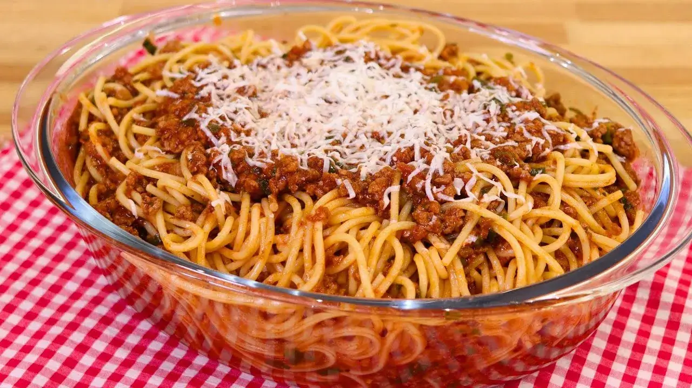

Macarronada
Home

Descrição
Macarronada é um casamento entre carne, macarrão e molho de tomate. Bom para o almoço ou janta e simples de fazer.
Ingredientes
- carne moída a gosto
- macarrão
- macarrão refogado na manteiga a gosto
- milho-verde
- 1 lata de milho verde
- ervilha
- 1 lata de ervilha
- creme de leite
- 1 lata de creme de leite
- molho de tomate
- 1 lata de molho de tomate